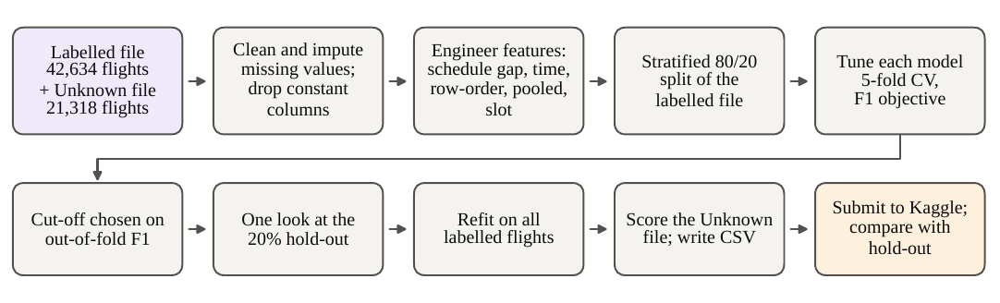

Course project · Introduction to Data Analytics
Predicting which flights arrive late.
I built seven classifiers to predict whether a flight arrives delayed, using 42,634 labelled flights. The biggest gain did not come from a better algorithm. It came from noticing that the data files were sorted by scheduled departure time, which made it possible to recover a column the files never contained.
- 0.847 Kaggle F1 of the best model, Gradient Boosting
- 0.853 Hold-out F1 of the same model
- +14 to 18 pts Hold-out F1 gained by the row-order features, for every model
- 0.903 AUC of the two key signals combined, against about 0.73 alone
The project in four lines
- The task. Classify each flight as delayed or not delayed on arrival, scored by the F1 of the delayed class. The final models were scored on 21,318 unlabelled flights through a Kaggle competition.
- The finding. A flight that left late appears out of place in a file sorted by scheduled departure, so its departure delay can be estimated from its row position alone.
- The result. Feature engineering was worth 17 to 19 points on Kaggle. Tuning, a wider search and ensembling together were worth 0.5 points or less.
- The caveat. The key feature depends on how the files were assembled, so it would not carry over to data without that ordering.
How the project ran
Two files went in: a labelled file for building models and an unlabelled file for the final Kaggle assessment. Every model followed the same path, and the cut-off that turns a score into a prediction was chosen on out-of-fold predictions, not fixed at 0.5.

Where to go next
- Want to see the hidden pattern? Read The Finding.
- Curious how the seven models compared? See Models & Results.
- Wondering what the result does not show? Check Limits & Next Steps.
- Hiring, or curious how this site was made? See Comments.